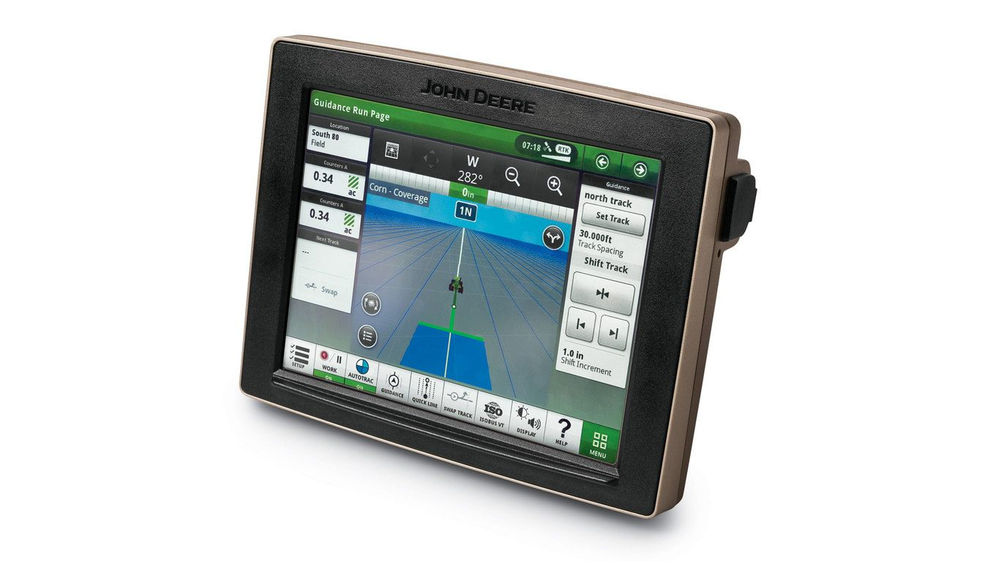

John Deere UX
I work for John Deere as an interaction designer. Contribute to and drive adoption of the Deere's Embedded Systems UX/UI standards, leveraged by IT delivery teams worldwide.

My daily work in Deere is collaborating with the UX leads, engineers and other designers, to design and ship embedded system interfaces for JD Crop Harvesting products.